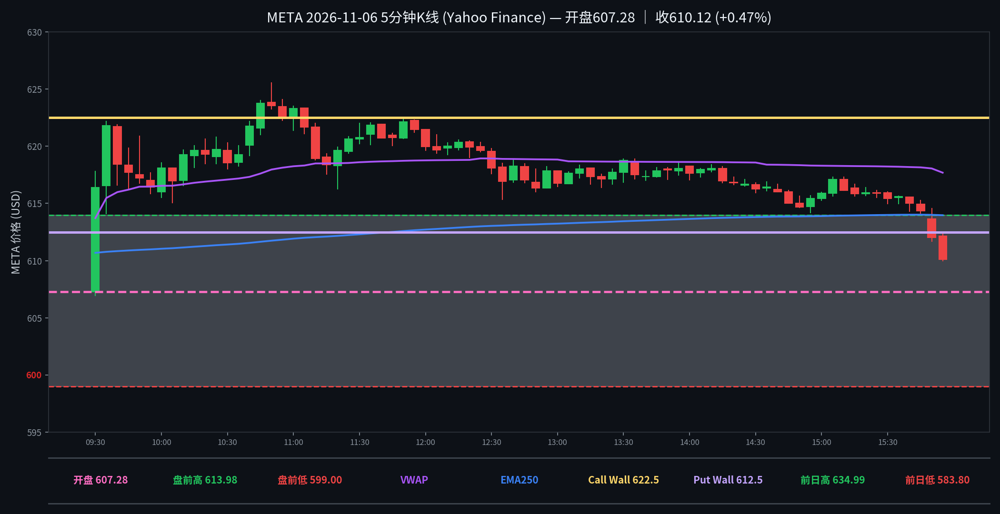

META 日内报告
2026年11月6日 · 周五 · 日内报告
早盘分析
（Junk-man 早盘简报未抓取到，留空待补）
（待补充 Junk-man 当日 #junkman-analysis 原文）
5 分钟 K 线（无 heatmap：YHS 维护停服）
无 heatmap：夜航社 Data API 收盘后维护停服（503），全天 78 档快照未取到；图表只画 5 分钟 K 线＋墙位/均线，墙取上午首帧算法值。

heatmap解读（无全天 heatmap：YHS Data API 维护停服 503）
⚠️ 夜航社 Data API 今日收盘后维护停服（503 SERVICE_DISABLED，discover / heatmap / ohlc / flow 四端点 16:26–16:33 ET 多次重试均失败），全天 78 档 5 分钟快照未取到，本节无全天 heatmap、TOP5 与收盘帧。以下仅为本地晨间扫描存档的上午结构（11 档，09:30–10:20 ET，0DTE 2026-11-06 到期链），只作上午参考，绝不冒充全天；午后结构未知，YHS 恢复后可回补。
- 上午首帧 09:30（现货 616.57，0DTE 2026-11-06）：总 gamma -20.4M，开盘即为负；正节点 612.5(+5.6M)/605(+5.3M)/622.5(+4.8M)，负节点 630(-12.5M)/610(-10.6M)/615(-4.9M)——现货夹在 610 负簇与 612.5 正节点之间
- 上午 09:30–10:20（11 档）：总 gamma 全程为负（-16.3M 至 -27.7M），未翻正；Call 墙 622.5 在 09:55 下移至 620，Put 侧锚 612.5 全程未变；价格上午贴墙上行、10:45 首根 5m 收上 Call 墙 622.5（收 623.75），10:50 摸全天高 625.55
- 价格与上午墙的互动：开盘 607.28 在 Put 墙 612.5 下方，09:30 当根即收回其上（收 616.38）；上午站上 Call 墙后午后一路回落，15:50 首根 5m 收破 Put 墙 612.5（收 612.03），收盘 610.12 落在 Put 墙、VWAP(617.69)、EMA250(613.97)之下
- 午后 heatmap 未知：YHS 自收盘起停服，无 10:20 之后任何快照，收盘帧总 gamma / 收盘墙 / 午后墙迁移均缺失，不推测
全天最大节点 TOP5
无全天 heatmap：TOP5 缺失（YHS 停服）。上午 11 档内的最大节点见 key_reads，仅作上午参考。
资金流（YHS 停服，未取到；口径 premium≥$20万｜size≥50｜DTE≤1｜side=at_ask/at_bid；mid单列、绝不计入主动买卖）
（当日无符合筛子的 flow 记录，或数据未拉取到）
YHS Data API 维护停服（503），flow/trades 端点未返回任何成交，本日资金流缺失——不是“无大单”，是数据未取到，不作方向判断。YHS 恢复后可回补。
分析总结
价格行为 × 上午 GEX 结构复盘（午后 heatmap 缺失）
① 开盘 607.28（Yahoo 5m 首根 open 替代值——YHS 日线停服未取到，非官方开盘价；较昨收 605.67 高开 +0.27%），全天 606.96–625.55，收 610.12（+0.73% vs 昨收；收开差 +2.84）。盘前高 613.98 / 低 599.00，09:25 盘前价 607.81。
② 白点轨迹（K 线）：首根 09:30 开 607.28、探 606.96 后收 616.38 → 上午震荡上行（09:35 收 621.81 → 10:00 收 618.09 → 10:45 收 623.75）→ 10:50 摸全天高 625.55 → 午后一路阴跌（11:00 收 623.30 → 12:00 收 619.97 → 13:00 收 616.76 → 14:00 收 617.65 → 15:00 收 615.91）→ 15:50 跌破 612.5（收 612.03）→ 终根 15:55 收 610.12（收在前日低 583.80 之上、VWAP 617.69 与 EMA250 613.97 之下）。
③ 结构（仅上午 11 档，午后未知）：总 gamma 开盘 -20.4M 且上午全程为负；首帧算法墙 Call 622.5（+4.8M）/ Put 612.5（+5.6M）；价格上午站上 Call 墙、午后回落并在 15:50 收破 Put 墙。午后墙是否跟随下移、收盘帧结构如何，均因 YHS 停服未知，不推测。
④ Junk-man 简报已核实缺席（见 junkman 字段）：按 2026-11-05 用户指令不再查 Discord，本地无用户当日粘贴/上传的简报文件，墙位记 null；上午算法墙见上文，非简报墙。
⑤ 资金流缺失：YHS 停服，flow 端点未返回成交，本日无资金流读数（不是无大单）。
K线=Yahoo Finance 5分钟；heatmap=夜航社 dealer-GEX 5分钟快照（本日停服缺失，上午结构取自本地晨间扫描存档 11 档）。
收盘后的静态快照；页面不在打开时更新行情。本日 heatmap / flow / straddle 因 YHS 维护停服缺失，YHS 恢复后可回补。